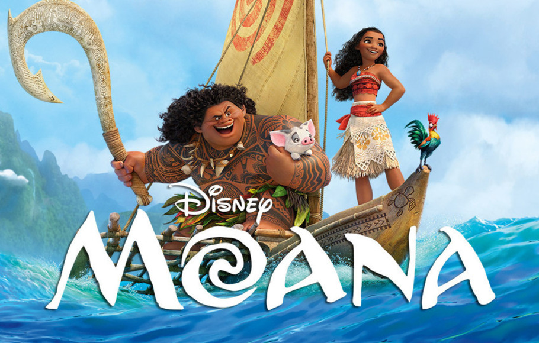
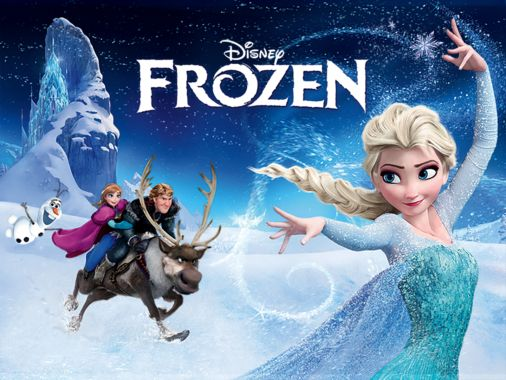
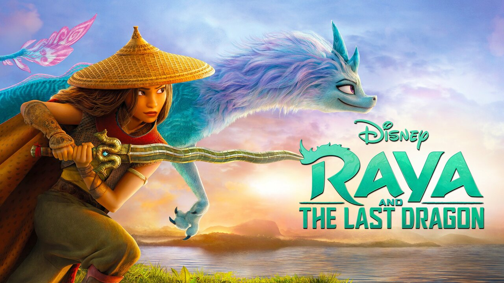

MOANA

Moana adalah sebuah film petualangan fantasi musikal animasi komputer 3D Amerika 2016 yang diproduksi oleh Walt Disney Animation Studios dan film ke-56 dalam kanon fitur animasi Disney. Film tersebut disutradarai oleh Ron Clements, John Musker, Auli'i Cravalho. Dwayne Johnson, Temuera Morrison menjadi pengisi suara utama.
FROZEN

Frozen adalah film fantasi musikal animasi komputer 3D Amerika 2013 yang diproduksi oleh Walt Disney Animation Studios dan dirilis oleh Walt Disney Pictures. Film fitur animasi Disney ke-53, terinspirasi oleh dongeng Hans Cristian Andersen "The Snow Queen". Ini bercerita tentang seorang putri yang tak kenal takut bernama Anna yang melakukan perjalanan bersama tukang es kasar, rusa yang setia, dan manusia salju yang naif untuk menemukan saudara perempuannya yaitu Elsa yang terasingkan akibat kekuatan es yang dimilikinya secara tidak sengaja menjebak kerajaan mereka di musim dingin yang abadi.
Raya and The Last Dragon

Raya and The Last Dragon adalah film laga petualangan fantasi animasi komputer Amerika Serikat tahun 2021 yang disutradarai Don Hall dan Carlos Lopez Estrada serta diproduksi oleh Walt Disney Animation Studios. Naskah film ini ditulis Qui Nguyen dan Adele Lim. Film ini terilhami oleh kebudayaan tradisional Asia Tenggara. Pengisi suara film ini terdiri dari Kelly Marie Tran, Awkwafina, Izaac Wang, Gemma Chan, Daniel Dae Kim, Benedict Wong dan Sandra Oh. Alur film ini ialah seorang putri pendekar yang mencari naga terakhir menurut dongeng, dengan harapan untuk mengembalikan permata naga yang akan mengusir roh-roh jahat yang dikenal sebagai Druun dari tanah Kumandra.